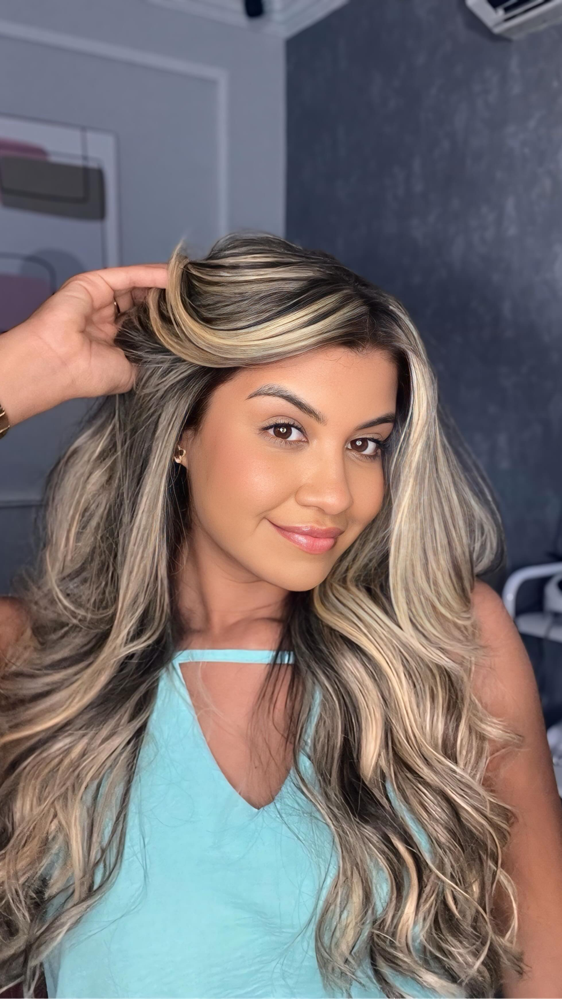
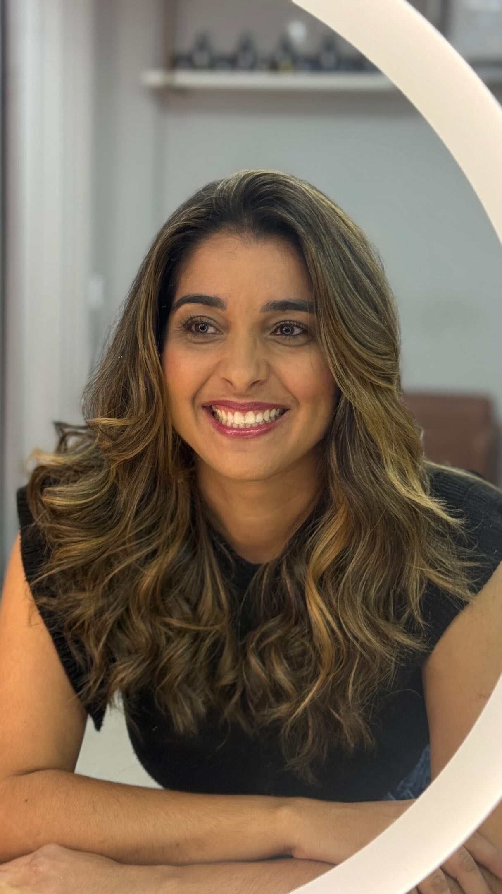
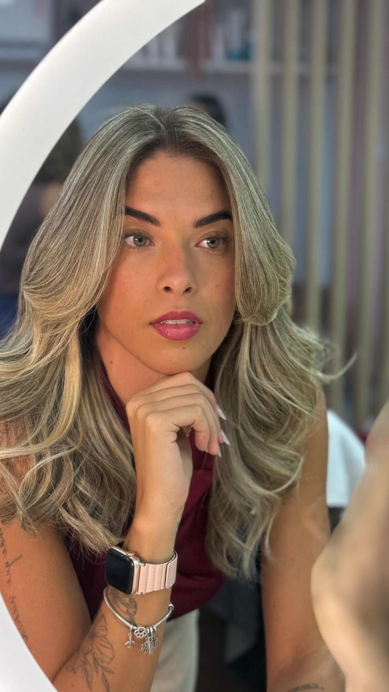
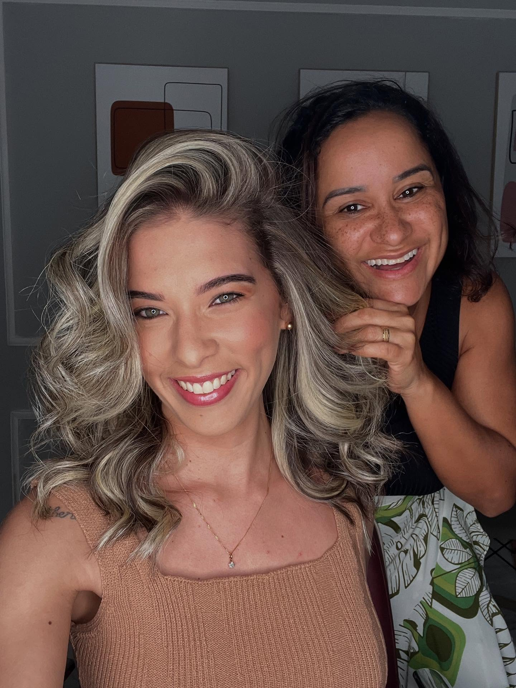
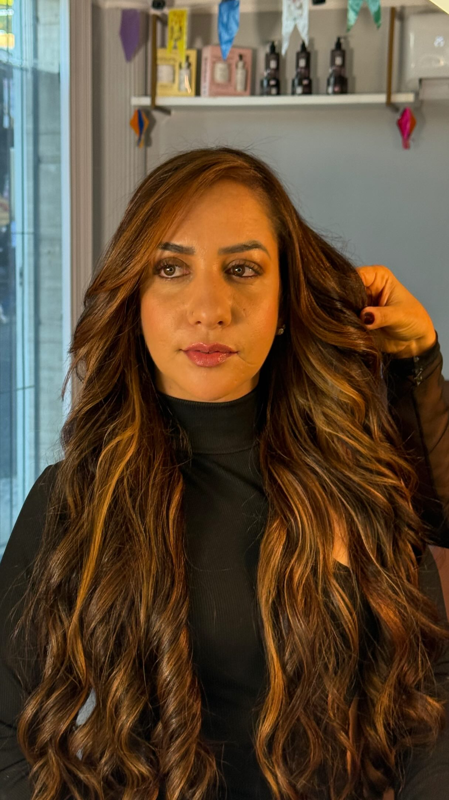
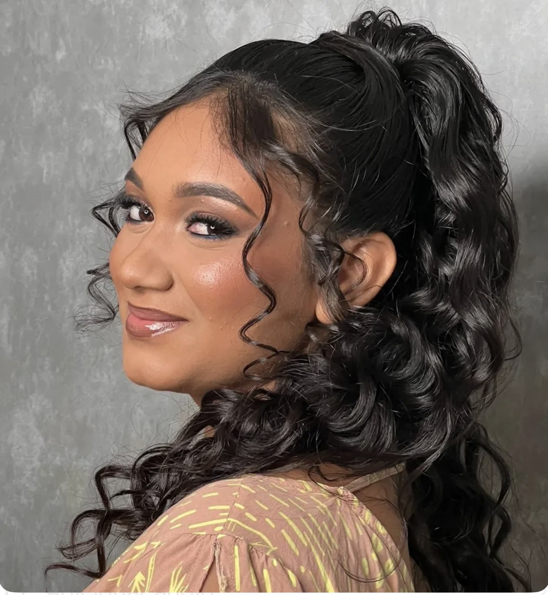
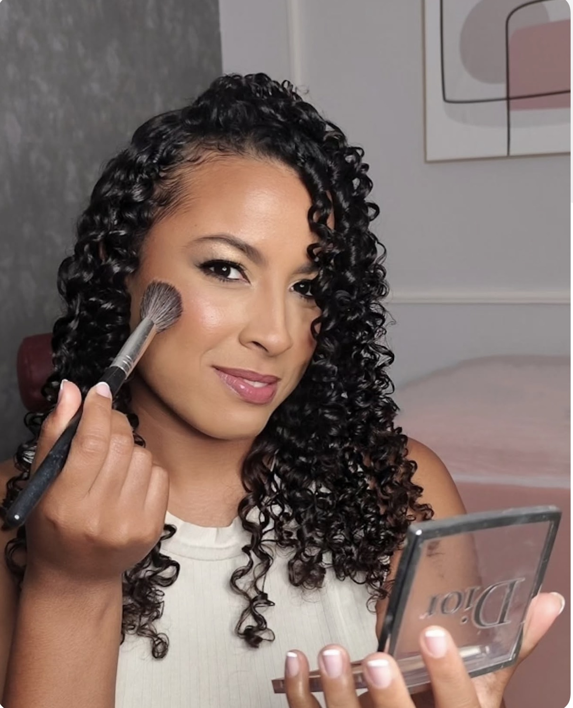
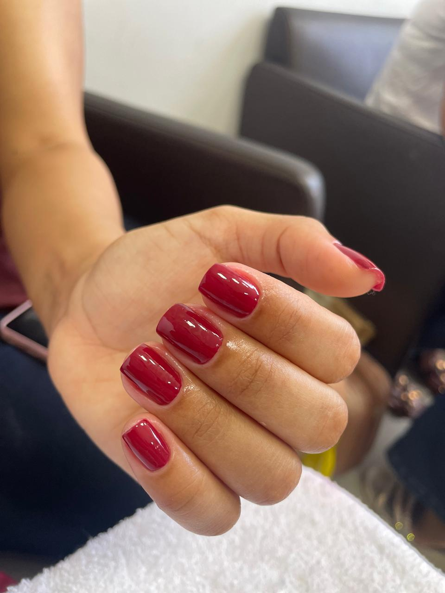

SALVADOR · BAHIA
divina facePOR ROSIANE RIBEIRO
Especialista em mechas e cortes
TRUSS EXPERT

Você Sob Uma Nova LuzBELEZA COM IDENTIDADE
20+anos de experiência
TRUSSExpert
Vocêno centro de cada escolha
BELEZA EM CADA TRANSFORMAÇÃO
Cada cabelo,
uma história.
Resultados reais de mulheres que confiaram no nosso trabalho para revelar o seu melhor.
Iluminação

Mais vida
aos seus fios

Beleza
com movimento

Naturalidade
em cada detalhe

Um novo olhar
para você
CADA CABELO, UMA HISTÓRIA
Nossos serviços
Conheça nossos serviços e descubra o próximo visual que vai realçar ainda mais a sua beleza.
Alisamentos
01Leveza e movimento

Soltura de cachos
02Cachos iluminados

Maquiagem & penteado
03Beleza compartilhada

Manicure & pedicure
04Beleza nos detalhes
Limpeza de pele
05Luz em novos tons

Massagem relaxante
06Leveza e bem-estar
Trabalhos reais do Salão Divina Face.
Quero agendar meu horárioQUEM VIVE A EXPERIÊNCIA, CONTA
O carinho que
volta pra gente.
Toque ou deslize para ver mais
“Atendimento perfeito. Resultado incrível! Me senti ainda mais bonita e confiante...”
Maria CastroCliente Divina Face
“Rosiane é uma profissional maravilhosa! Entende exatamente o que a gente quer...”
Juliana SouzaCliente Divina Face
“Ambiente acolhedor, equipe atenciosa e resultado impecável. Super recomendo!”
Fernanda LimaCliente Divina Face
NOSSOS SERVIÇOS
Beleza que
valoriza você.
Do cuidado com os cabelos aos momentos de beleza e relaxamento, cada atendimento é pensado para você.
▣ Agende seu horário →divina faceROSIANE RIBEIRO
◇Atendimento
personalizado
personalizado
⬡Produtos
profissionais
profissionais
✦Ambiente acolhedor
e moderno
e moderno
⌖Localização privilegiada
em Salvador · BA
em Salvador · BA
AS MÃOS POR TRÁS DA TRANSFORMAÇÃO
Rosiane
Ribeiro.
ESPECIALISTA EM MECHAS & CORTE TRUSS EXPERT
Há mais de 20 anos, Rosiane transforma cabelos e valoriza a beleza de cada mulher. À frente do Divina Face, em Salvador, une experiência e um olhar atento à individualidade de quem senta em sua cadeira.
Especialista, educadora e TRUSS Expert. Uma trajetória dedicada à técnica, ao cuidado e à criação de resultados com personalidade.
Quero conversar sobre meu atendimentoSEU PRÓXIMO VISUAL COMEÇA AQUI
Um momento
só seu.
Conte o que você imagina
Envie uma mensagem pelo WhatsApp e compartilhe suas referências e seu momento.
Converse sobre as possibilidades
Tire suas dúvidas sobre o serviço, os cuidados e o resultado que você deseja.
Reserve seu horário
Consulte a disponibilidade e combine os detalhes do seu atendimento com a equipe.
TE ESPERAMOS EM SALVADOR
Seu momento
tem endereço.
Venha viver uma experiência completa no Salão Divina Face. Um espaço pensado para o seu bem-estar e para realçar a sua beleza.
⌖
São Caetano · Salvador, BA
CEP 40394-040
Salão Divina Face
Rua Capelinha de São Caetano, 15São Caetano · Salvador, BA
CEP 40394-040
◷
Traçar rota no Google Maps →⌁ Abrir localização no Google MapsHorário de atendimento
Segunda a Sábado
das 09h às 19h
Salão Divina FaceR. Capelinha de São Caetano, 15
São Caetano, Salvador · BA5,0 ★★★★★Ver no Google Maps →
⌖ Ver mapa ampliado ⛶São Caetano, Salvador · BA5,0 ★★★★★Ver no Google Maps →
▱Fácil acesso
e estacionamento
e estacionamento
⬡Região segura
e valorizada
e valorizada
♡Ambiente acolhedor
e moderno
e moderno